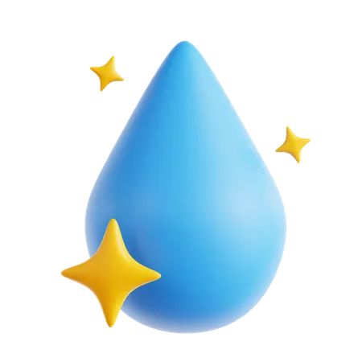

Donate to these charities!
Click the website names to be redirected! :)
-

Water.org - Helps financial partners provide loans for water and sanitation projects, enabling people to finance taps and toilets in their homes without paying high fees.
-
Safe Water Network - Works on getting water to people, helping with technical issues, engaging with other sectors, and making water services equitable and sustainable.
-
Clean Water Fund - Supports local environmental leaders and organizations working on issues such as water access, pollution, sustainability, and environmental justice.
-
The Water Project - Provides services such as local NGO training, well pumps, and other water equipment, and water safety education and maintenance.
-
Save the Water - Researches chemicals in North American waters, studies their effects, informs the public, and creates water treatment technologies to remove pollutants.
-
Splash - Focuses on clean water, hygiene, sanitation, and health, especially for kids.